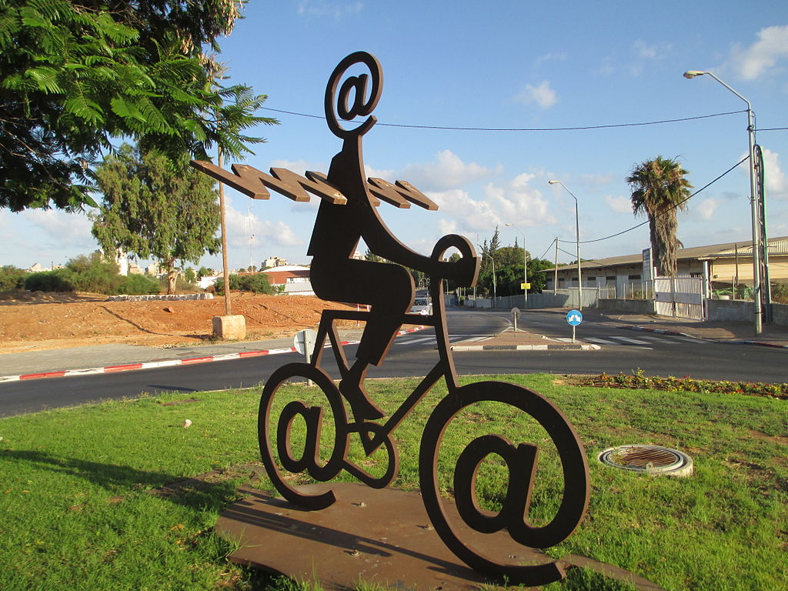
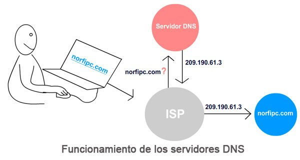
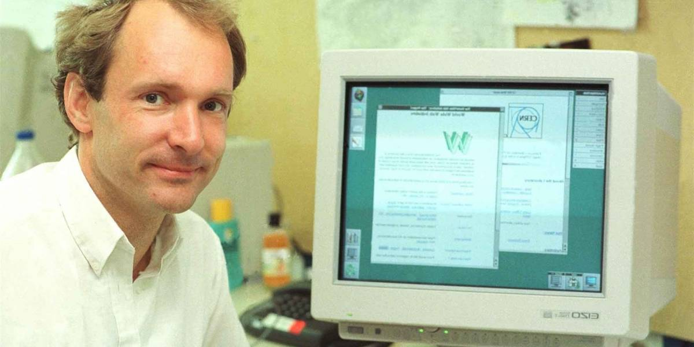
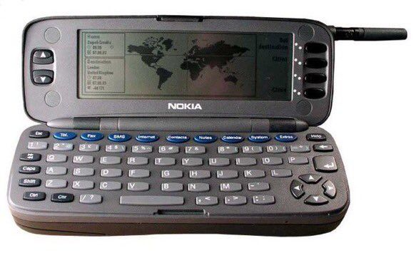

En 1969 Michel Elie, considerado uno de los pioneros de Internet, ingresa en la UCLA (Universidad de California en Los Ángeles) y se incorpora a ARPA (Agencia de Proyectos de Investigación Avanzada) con una beca de investigación. A finales de ese año se consigue conectar la computadora de la UCLA (Universidad de California en los Ángeles) con otra del SRI (Instituto de Investigación de Stanford), cerca de San Francisco. Sería el primer nodo de Internet: unas 360 millas
Te proponemos echar un vistazo a 16 hitos de internet mostrados cronológicamente para que te hagas una idea de la red de redes desde una perspectiva histórica
Timeline de Internet
1969 Primer Nodo de internet
1971 Envío del primer email
Se envía el primer email. Fue enviado por Ray Tomlinson y el destinatario fue él mismo.
En 1971 se envía el primer email a través de internet, o en ese momento ARPANET. Y en 1977 se convertirá en un estándar, hasta hoy.
Su inventor es Ray Tomlinson, que adaptó un protocolo previo (CYPNET) que servía solamente para enviar mensajes en una misma computadora.
Tomlinson también es el responsable de incorporar la arroba @ para separar el nombre de usuario y la computadora donde se aloja la cuenta de usuario, que en la actualidad es un dominio.
1985: Se registra el primer dominio
El 15 de marzo de 1985, Symbolics.com se convierte en el primer dominio web registrado
El Sistema de nombres de dominio ( DNS ) es un sistema de nombres jerárquico y descentralizado para computadoras, servicios u otros recursos conectados a Internet o una red privada. Asocia información diversa con nombres de dominio asignados a cada una de las entidades participantes. Lo más destacado es que traduce nombres de dominio más fácilmente memorizados a las direcciones IP numéricas necesarias para localizar e identificar servicios y dispositivos informáticos con los protocolos de red subyacentes . Al proporcionar un servicio de directorio distribuido a nivel mundial, el Sistema de nombres de dominio ha sido un componente esencial de la funcionalidad de Internet desde 1985.
1991 Presentación de la web
Internet funciona con la tecnología TCP/IP y uno de los servicios más populares tienen que ver con las páginas web, que no serían posibles sin la tecnología WWW.
Su responsable fue el británico Tim Berners-Lee, que en 1989 anunció la World Wide Web, un sistema de distribución de archivos de hipertexto conectados entre sí y accesibles por internet.
En 1991, Berners-Lee había creado todas las herramientas necesarias para que una web funcionase: el primer navegador web (el cual también era un editor web), el primer servidor web y las primeras páginas web.
1993: Se lanza el primer navegador web gráfico: Mosaic.
 El navegador Mosaic o NCSA Mosaic fue un navegador web gráfico disponible para visualizar páginas web en sistemas operativos como Mac, windows u otros
El navegador Mosaic o NCSA Mosaic fue un navegador web gráfico disponible para visualizar páginas web en sistemas operativos como Mac, windows u otros
Un navegador web (en inglés, web browser) es un software, aplicación o programa que permite el acceso a la Web, interpretando la información de distintos tipos de archivos y sitios web para que estos puedan ser vistos.
1994: Se lanza el primer banner.
Nace la publicidad en Internet. El banner apareció en HotWired.com en octubre de 1994 para promocionar 7 museos de arte patrocinados por AT&T.
Un banner (en español: banderola o pancarta), o más formalmente web banner, es un formato publicitario en Internet. Es un tipo de anuncio que generalmente es empleado en la publicidad llamada display, piezas publicitarias de contenido gráfico que se encuentran localizadas en diferentes páginas web. Los banners están diseñados con la intención de llamar la atención para así resaltar la publicidad y dar a comunicar un mensaje. La web o soporte donde el banner va incluido tiene como objetivo que el anunciante pague por esa publicidad que los visitantes van a ver.
1994: Nace la primera web de comercio electrónico.
La web como canal de comercio. Fue el retailer online NetMarket. Su primer artículo vendido fue una copia del disco “Ten Summoner’s Tales” de Sting.
El comercio electrónico, también conocido como e-commerce (electronic commerce en inglés) o bien comercio por Internet o comercio en línea, consiste en la compra y venta de productos o de servicios a través de medios electrónicos, tales como redes sociales y otras páginas web.
1994: Nacen los motores de búsqueda:
 Fue WebCrawler el primer motor de búsqueda de texto completo.También apareció en 1994 Lycos (que comenzó en la Carnegie Mellon University)Muy pronto aparecieron muchos más buscadores, como Excite, Infoseek, Inktomi, Northern Light y Altavista.
Fue WebCrawler el primer motor de búsqueda de texto completo.También apareció en 1994 Lycos (que comenzó en la Carnegie Mellon University)Muy pronto aparecieron muchos más buscadores, como Excite, Infoseek, Inktomi, Northern Light y Altavista.
Un motor de búsqueda o buscador es un sistema informático que busca archivos almacenados en servidores web gracias a su spider (también llamado araña web).1 Un ejemplo son los buscadores de Internet (algunos buscan únicamente en la web, pero otros lo hacen además en noticias, servicios como Gopher, FTP, etc.) cuando se pide información sobre algún tema. Las búsquedas se hacen con palabras clave o con árboles jerárquicos por temas; el resultado de la búsqueda «Página de resultados del buscador» es un listado de direcciones web en los que se mencionan temas relacionados con las palabras clave buscadas.
1995 Nace Amazon
 Amazon.com, Inc. es una compañía estadounidense de comercio electrónico y servicios de computación en la nube a todos los niveles con sede en la ciudad estadounidense de Seattle, Estado de Washington
Amazon.com, Inc. es una compañía estadounidense de comercio electrónico y servicios de computación en la nube a todos los niveles con sede en la ciudad estadounidense de Seattle, Estado de Washington
Jeff Bezos, fundador de Amazon, seleccionó el nombre de Amazon mirando el diccionario, optó por el nombre, Amazon, porque el Amazonas era un lugar "exótico y diferente" tal como él planeaba su tienda; el río Amazonas, era el río "más grande" del mundo, y planeaba convertir su tienda en la más grande del mundo.
1995: Se vende el primer producto en Ebay.
 Fue un puntero láser cuya venta alcanzó los 14,83 dólares.
Fue un puntero láser cuya venta alcanzó los 14,83 dólares.
eBay es un sitio destinado a la subasta y comercio electrónico de productos a través de Internet. Es uno de los pioneros en este tipo de transacciones, habiendo sido fundado en el año 1995. Desde 2002 y hasta 2015, eBay era propietario de PayPal.
1996: Se lanza el primer teléfono móvil con conexión a internet
Fue el Nokia 9000 Communicator.
Con la aparición de la telefonía móvil digital, fue posible acceder a páginas de Internet especialmente diseñadas para móviles, conocido como tecnología WAP. Desde ese momento hasta la actualidad,
Las primeras conexiones se efectuaban mediante una llamada telefónica a un número del operador a través de la cual se transmitían los datos, de manera similar a como lo haría un módem de línea fija para PC.
1997 Nace el buscador Google
El objetivo principal del buscador de Google es buscar texto en las páginas web, en lugar de otro tipo de datos, fue desarrollado originalmente por Larry Page y Sergey Brin en 1997.
El principal producto de Google es el motor de búsqueda de contenido en Internet, del mismo nombre, aunque ofrece también otros productos y servicios como el correo electrónico llamado Gmail, sus servicios de mapas Google Maps, Google Street View y Google Earth, el sitio web de vídeos YouTube y otras utilidades web como Google Libros o Google Noticias, Google Chrome
2000: Nace el wifi
El wifi (escrito también wi fi)1 es una tecnología que permite la interconexión inalámbrica de dispositivos electrónicos. Los dispositivos habilitados con wifi (tales como computadoras personales, teléfonos, televisores, videoconsolas, reproductores de música...) pueden conectarse entre sí o a internet a través de un punto de acceso de red inalámbrica.
Esta nueva tecnología surgió por la necesidad de establecer un mecanismo de conexión inalámbrica que fuese compatible entre distintos dispositivos. Buscando esa compatibilidad, en 1999 las empresas 3Com, Airones, Intersil, Lucent Technologies, Nokia y Symbol Technologies se unieron para crear la Wireless Ethernet Compatibility Alliance, o WECA, actualmente llamada Alianza Wi-Fi. El objetivo de la misma fue designar una marca que permitiese fomentar más fácilmente la tecnología inalámbrica y asegurar la compatibilidad de equipos.
2004 Nace Facebook
Facebook, es una compañía estadounidense que ofrece servicios de redes sociales y medios sociales en línea con sede en Menlo Park, California. Su sitio web fue lanzado el 4 de febrero de 2004 por Mark Zuckerberg, junto con otros estudiantes de la Universidad de Harvard y compañeros de habitación, Eduardo Saverin, Andrew McCollum, Dustin Moskovitz y Chris Hughes. Está disponible en español desde febrero de 2008. Facebook es una plataforma que funciona sobre una infraestructura de computación basada principal y totalmente en sistemas GNU/Linux, usando el conjunto de tecnologías LAMP, entre otras.
2005: Se sube el primer vídeo a YouTube.
Fue subido por el co-fundador de YouTube Jawed Karim.
2008: WhatsApp
WhatsApp es una aplicación de mensajería para teléfonos inteligentes, en la que se envían y reciben mensajes mediante Internet, complementando servicios de mensajería instantánea, servicio de mensajes cortos o sistema de mensajería multimedia. Además de utilizar la mensajería en modo texto, los usuarios de la libreta de contacto pueden crear grupos y enviarse mutuamente imágenes, documentos, ubicaciones, contactos, vídeos y grabaciones de audio.
El 19 de febrero de 2014, la aplicación fue adquirida por la empresa Facebook. Algunas semanas después de la compra, WhatsApp anunció tener capacidad para realizar videollamadas
Una línea del tiempo es un documento gráfico para separar eventos y etapas enmarcados en una variable tiempo y de ese modo delimitar distintos hitos/acontecimientos a lo largo de un proceso temporal